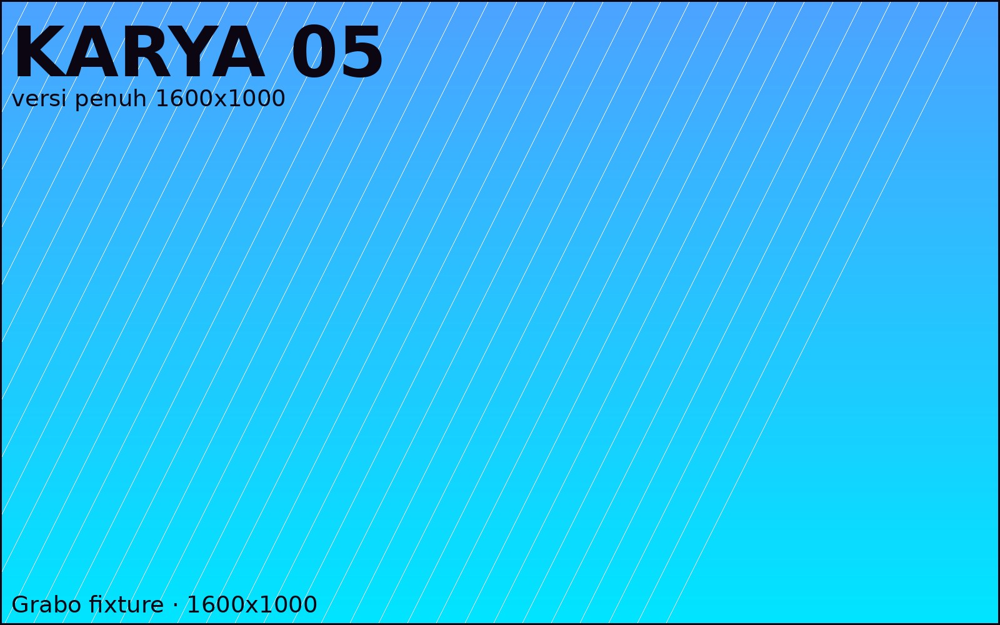
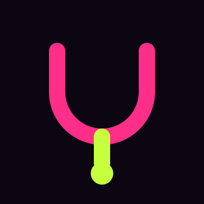
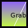
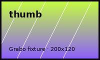
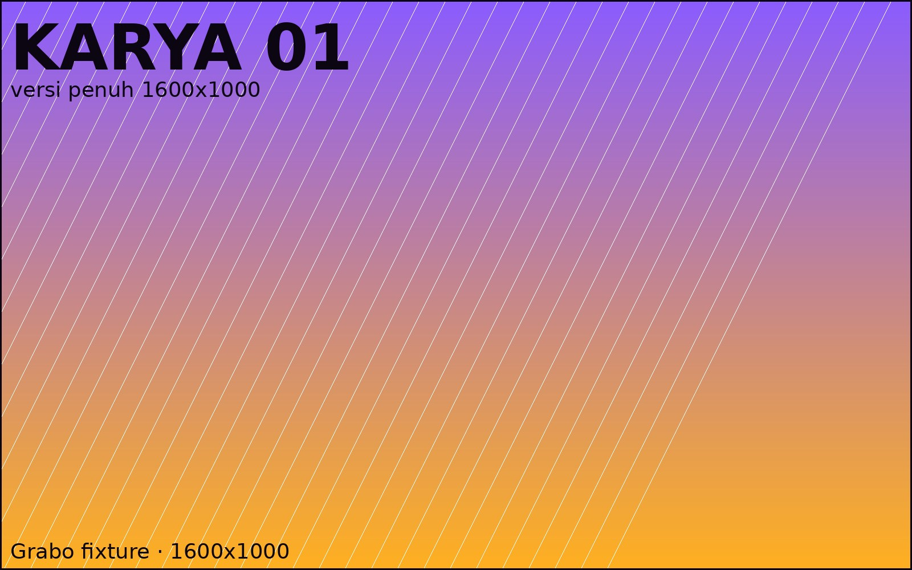
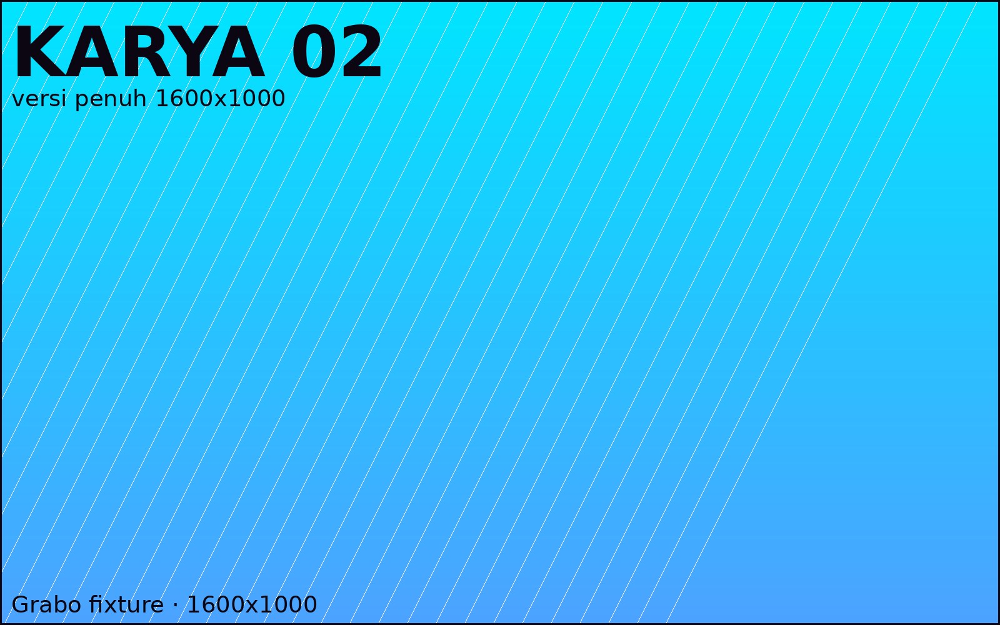
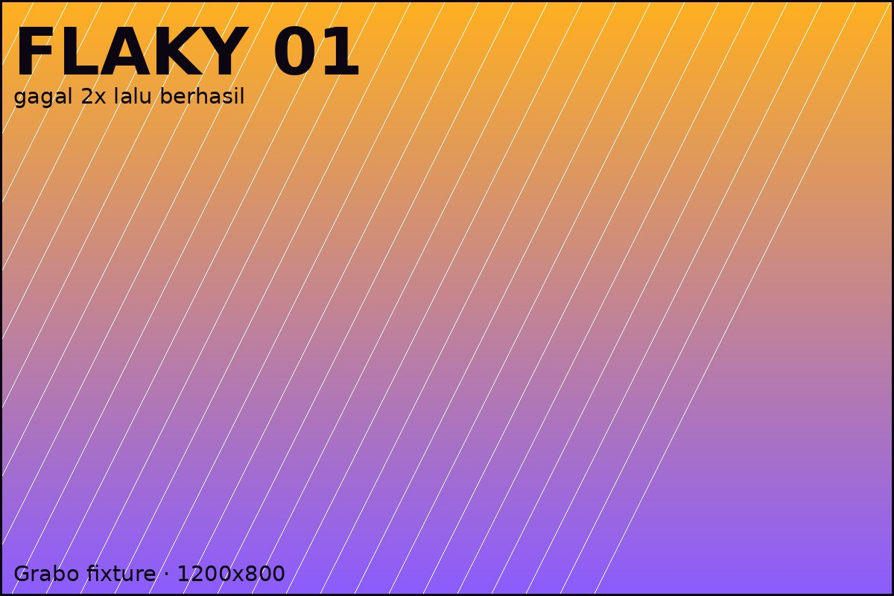
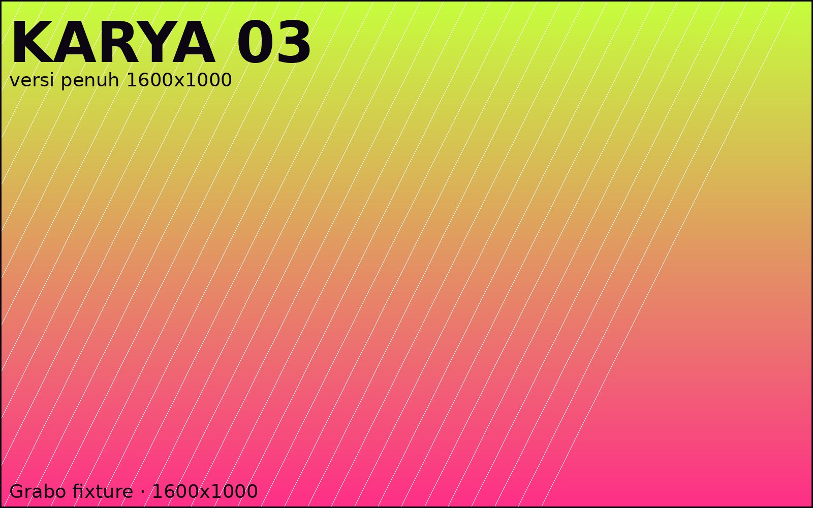
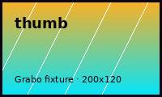

1 · Srcset & versi penuh
2 · Malas-muat (data-src / loading=lazy)
3 · Picture & source




4 · Latar CSS
5 · Kanvas, blob, dan data URL
6 · Video progresif
7 · Aliran (HLS / DASH)
Tombol ini mengambil playlist seperti pemutar asli, supaya pengamat jaringan Grabo melihatnya.
8 · Duplikat isi & tautan berkas



Unduh potret-02.png (tautan download)


9 · URL kedaluwarsa & flaky


10 · Muat lebih
11 · Jauh di bawah lipatan


Tiga gambar di atas baru dibuat oleh skrip saat wadahnya terlihat — tidak ada jejaknya di DOM sebelum digulir.